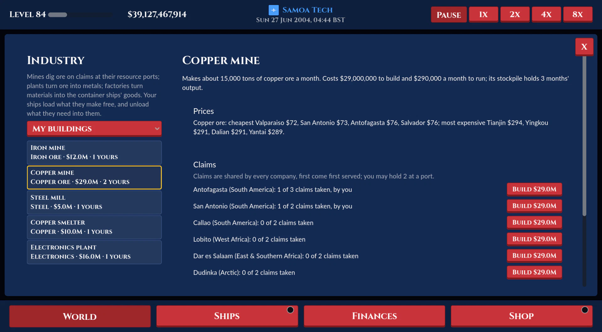

Cargo & Ore industry
Added or changed on 15 October 2026

- Every good the Cargo & Ore type trades has its building, for Cargo & Ore companies to build. 40 buildings: 13 mines (Iron, Coal, Gold, Copper, Bauxite, Nickel, Zinc, Tin, Lithium, Silver, Phosphate, Manganese and Rare earth mines) and a Logging camp (Timber) at their resource ports; 13 plants (Steel mill, Aluminium smelter, Copper smelter, Nickel refinery, Zinc smelter, Tin smelter, Lithium refinery, Gold refinery, Silver refinery, Ferroalloy plant, Rare earth separation plant, Fertilizer plant, Plastics plant); and 13 factories (Toy factory, Textile mill, Furniture works, Electronics plant, Appliance factory, Machine shop, Battery plant, Solar panel plant, Tool works, Sporting goods factory, Shoe factory, Cosmetics plant, Pharmaceutical plant).
- The chains: iron ore and coal make steel; bauxite aluminium; copper ore copper; nickel ore nickel; zinc ore zinc; tin ore tin; lithium ore lithium; gold ore gold bars; silver ore silver bars; manganese ore and coal ferromanganese; rare earth ore rare earths; phosphate fertilizer; crude oil plastics. Then plastics make toys, cosmetics and (with rubber) footwear; cotton clothing; timber furniture; copper, rare earths and plastics electronics; steel, copper and plastics home appliances; steel and aluminium machine parts; lithium, nickel and manganese ore batteries; aluminium and silver bars solar panels; steel and zinc tools; aluminium and plastics sporting goods; medicine takes nothing shipped. Each input is so much a unit of output (1.6 tons of iron ore and 0.8 of coal a ton of steel...).
- 34 new goods: 10 container goods, 10 ores and 14 breakbulk goods. Each line's new goods are priced so its average base price stays as it was (containers $1,750, ores $100 a ton), so level costs don't move. Prices: cheapest at their makers' ports (a mine's and camp's ports at half), then their regions, else their line's default by region (manufactured goods most expensive in the rich regions, ores in the industrial ones, metals in the growing ones).
- Mines and camps go on claims at their resource ports (2 to 3 a port: iron at Two Harbors, Duluth, Presque Isle, Kirkenes, Vitoria, Brisbane, Nain; copper at Antofagasta, San Antonio, Callao, Lobito, Dar es Salaam, Dudinka; bauxite at Conakry, Darwin, Vila do Conde, Kingston, Fremantle; timber at Vancouver, Seattle, Arkhangelsk, Vanino and more), shared by every company, first come first served, at most 2 of a port's per company. Plants and factories go at any port in a region the company has unlocked, one of each kind a port per company.
- Each makes its good a calendar day at a time: a mine or camp 15,000 tons a month, a plant 2,500 tons, a factory 600 containers, into its stockpile (holding 3 months' output). Its inputs come out of its store: the company's ships unload them there (ships unloading at a port where their company has a site taking their cargo put what fits into its store, up to 3 months' worth, the rest sold; counted at the port's buy price, what the site would have paid); when the store runs short it buys what it needs at the port's price, so a site its own ships keep supplied (from its own mines best) earns more. The company's ships load its stockpiles free, and choosing cargo they count an input their own site at the next port takes at that port's buy price. A stockpile can also be sold where it is.
- Costs: a building's month of output over its inputs at base prices x 14, to the nearest $1M within $5M-$80M (a plant or factory that takes nothing shipped 1.5x): an iron mine $12M, a gold mine $37M, a copper mine $29M, a logging camp $25M, a steel mill $5M, a gold refinery $18M, an electronics plant $16M, a pharmaceutical plant $16M. Upkeep 1% of that a calendar month, paid a day at a time; inputs bought, building and upkeep are Industry in the Finances totals, stockpiles sold Industry stock sales. A site can be listed for other Cargo & Ore companies at its price (bought with its stock and store) or closed for a quarter back.
- The Industry page (a mine-cart button at the map's top left, Cargo & Ore companies): the buildings down the left (Mines & camps, Plants, Factories or My buildings, each with its good and price), and the one picked: what it makes, from what, how much a month, its cost and upkeep; its good's cheapest and most expensive ports and its inputs' cheapest; a mine's or camp's claims port by port (taken and by whom, Build, and Buy for one listed); a plant's or factory's Build with a port picker (the HQ and hubs first); and the company's own (stockpile, inputs in store, made so far, Sell, List, Close).
- The port popup lists the industry at the port (each building, the claims still free, whose, and this player's stockpile) with an Industry button to the page. The map's Industry switch (it was Factories) marks every site by its port alongside the makers' factories: a mine's headframe, a camp's tree, a plant's or factory's works, in its good's colour, outlined in its company's.
- AI rivals with Cargo & Ore (from level 5, every few thinks, up to 1 site plus 1 every 10 levels) build the building whose good their ships carry that makes the most for its price, at a free claim or at their HQ or a hub, and sell a site's stockpile where it is once it's nearly full.
- Saved with the world (the claims are everyone's) and sent to joined games with each update; the actions are host commands.
- Breakbulk carriers: Breakbulk Coaster (tier 1, 60 tons), Multipurpose (tier 2, 200 tons), Tweendecker (tier 3, 1,000 tons), Project Carrier (tier 4, 5,000 tons, Medium ports and up) and Open-Hatch Giant (tier 5, 40,000 tons, Large ports), with the ore carriers' speeds, prices and running costs, a load worth what an ore carrier's is; the three smallest through the Seaway, and the Buffalo carries them. Drawn as general cargo ships with the house aft, three holds and two deck cranes: steel coils, beams and crates in the holds, all coils for steel and logs for timber.
- Ore carriers' holds show the new ores in their colours.